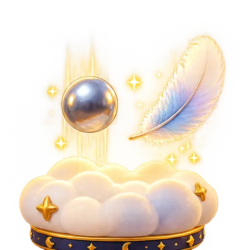
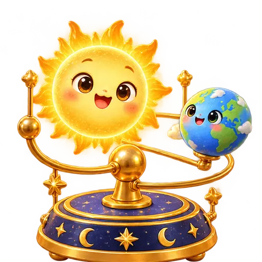
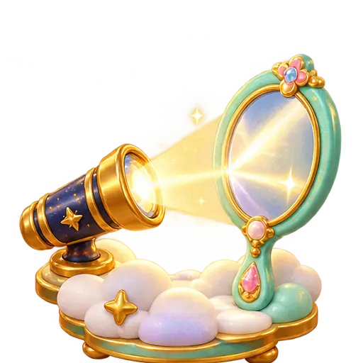
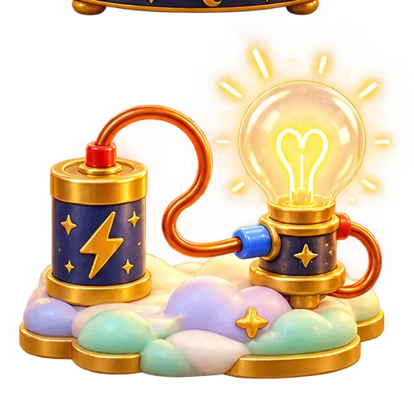
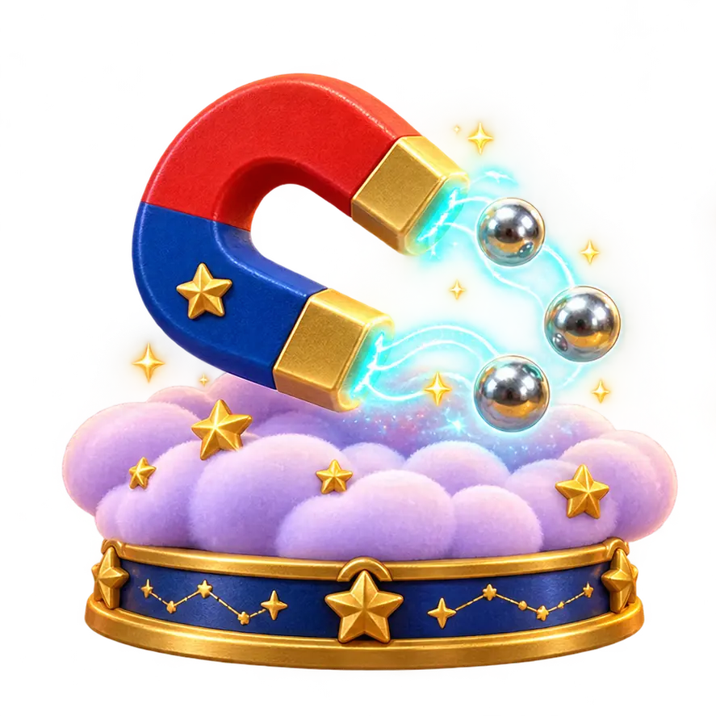
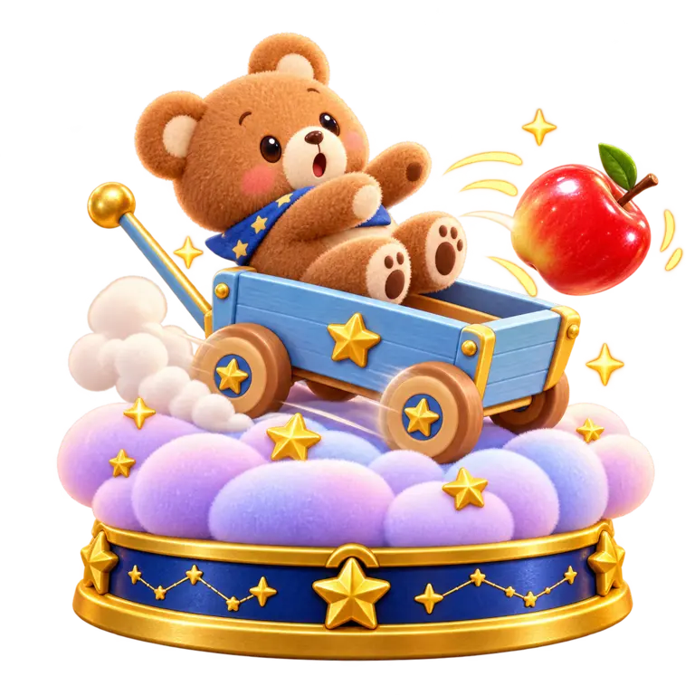
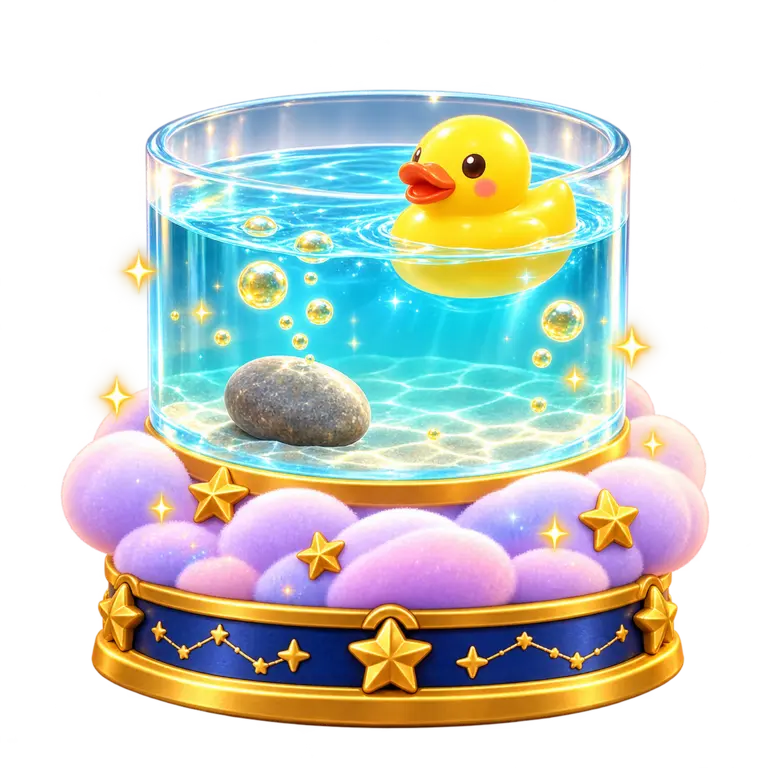

우리 친구들과 함께 떠나는 반짝반짝 과학 여행!
책 속에 숨은 비밀을 콕! 눌러봐요.귀여운 친구들과 직접 움직이며 발견하는 12가지 실험!
가입 없이 무료 · 모바일에서도 바로 체험
마법책의 목차
마음에 드는 장면을 톡! 친구들이 실험을 보여줄게요.







쇠구슬과 깃털, 누가 먼저 바닥에 닿을까요?
진공에서는 같은 중력가속도로 떨어집니다.
공기 저항은 낙하 속도를 바꿉니다.
이해를 돕기 위한 단순화 모델입니다.
공기가 없는 곳에서는 어떻게 될까요?
정답을 골라 주세요!